-
Black Dog on the Beach
poem visualization
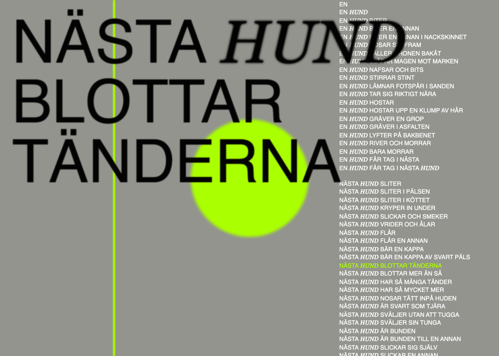 -
Lös Monolit
visual poetry monolith (double-click to re-generate)
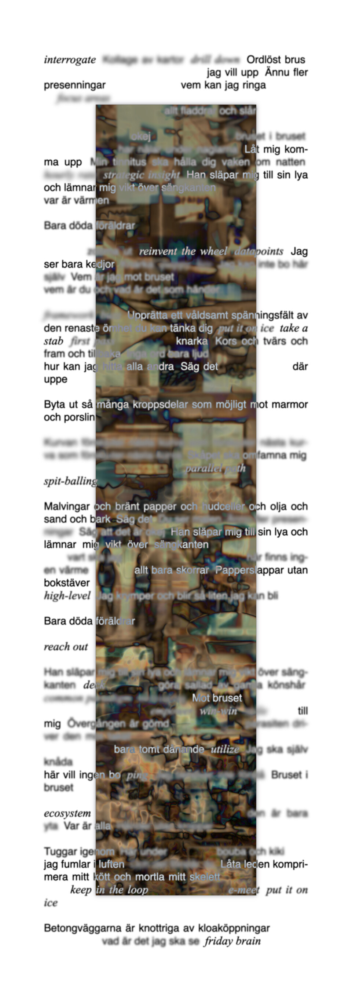 -
Body: near and far
association poem, living disgusting body ♥
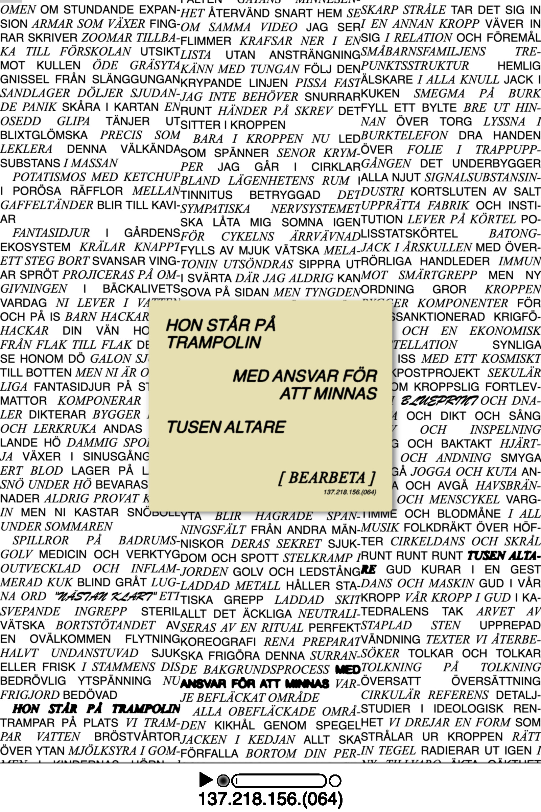 -
Goo Poem
whisper game poem, living web experiment
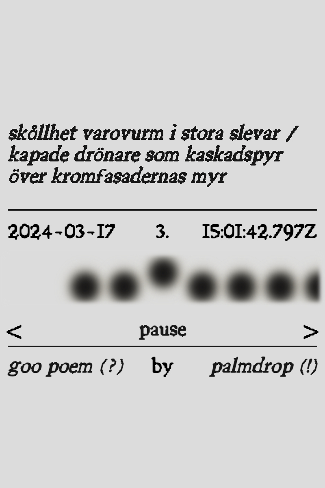 -
Evergreen Broth
strange web space, narrative html structure, office vibes

-
substrate catalogue
catalogue of substrate experiments and stream-of-consciousness descriptions
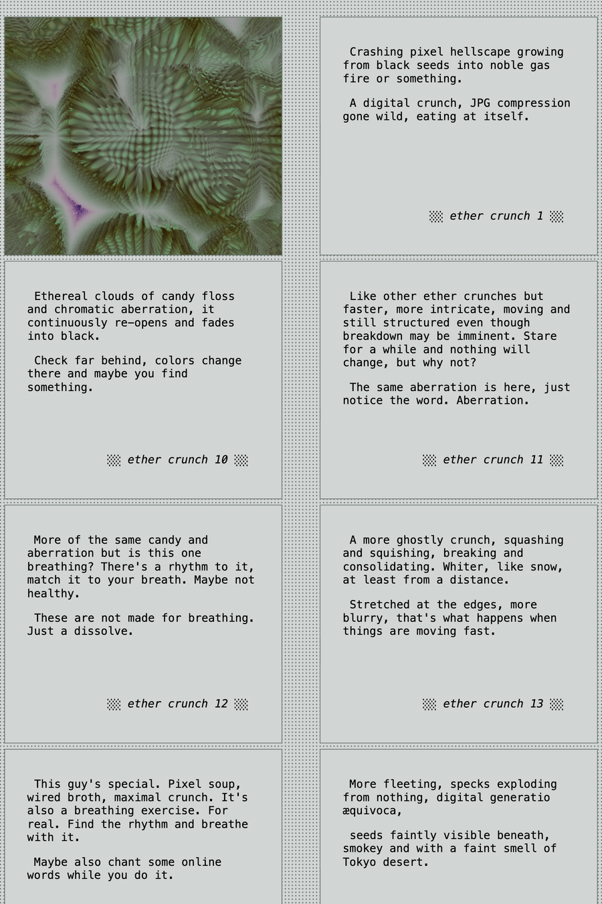 -
artifacts
abstract journal-like fragments as poetic memory prompts
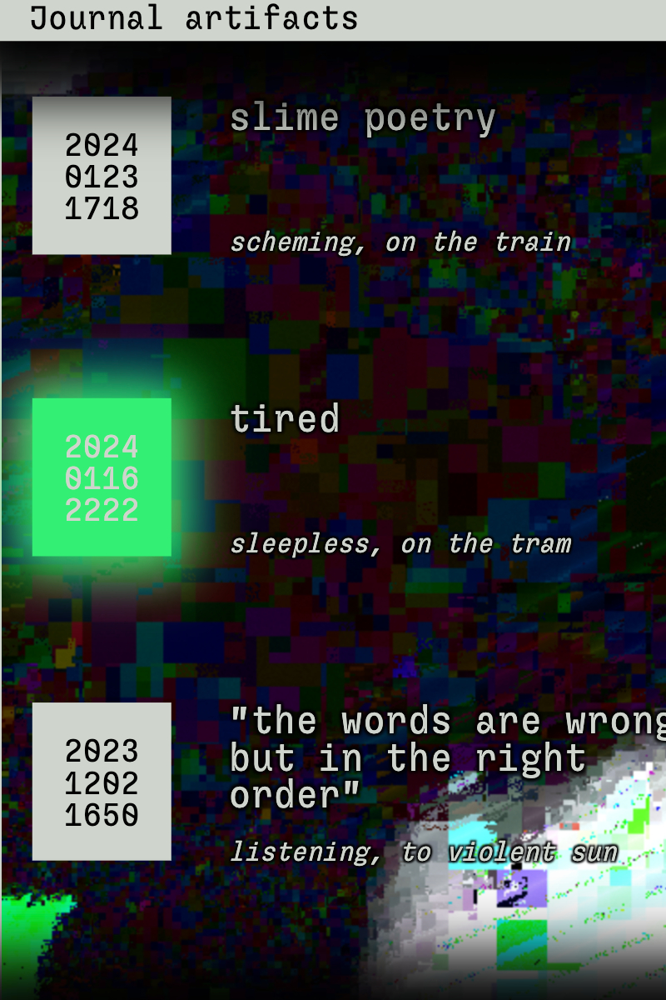 -
substrates
visual web programming for noise and domain warping effects
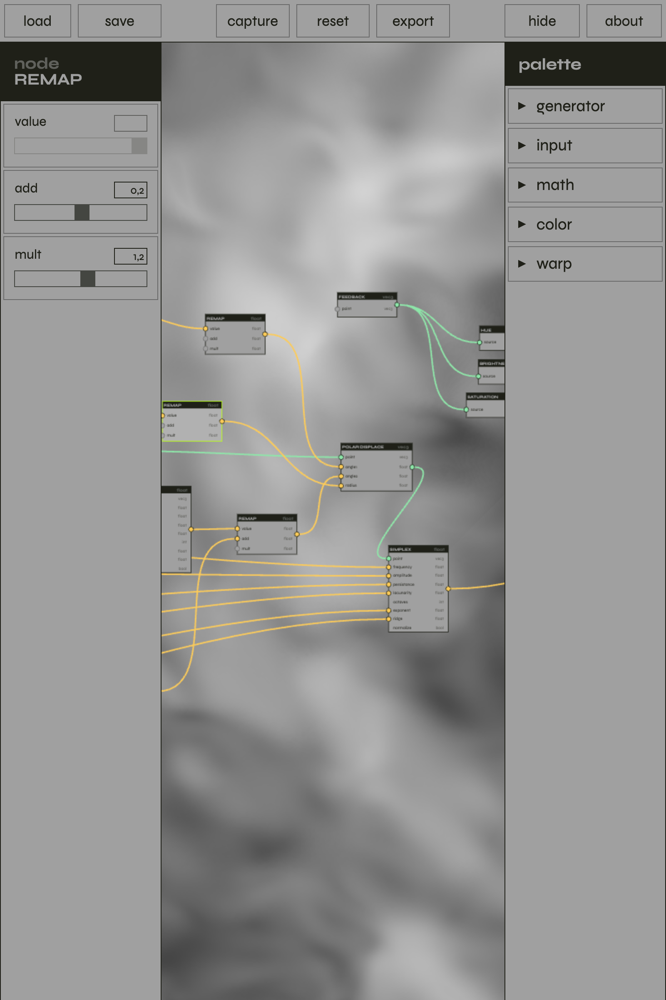 -
guys
exploring guys - creative bullshit created by a friend and I
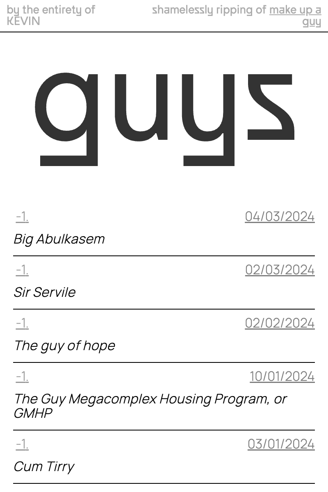 -
slices
vivid interfaces - viewing fragments
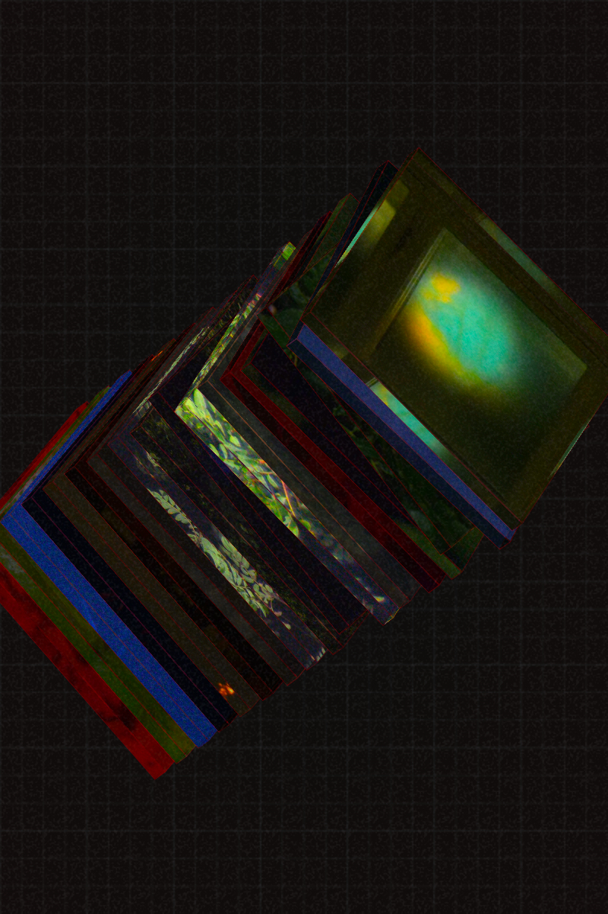 -
pieces
small generative art experiments
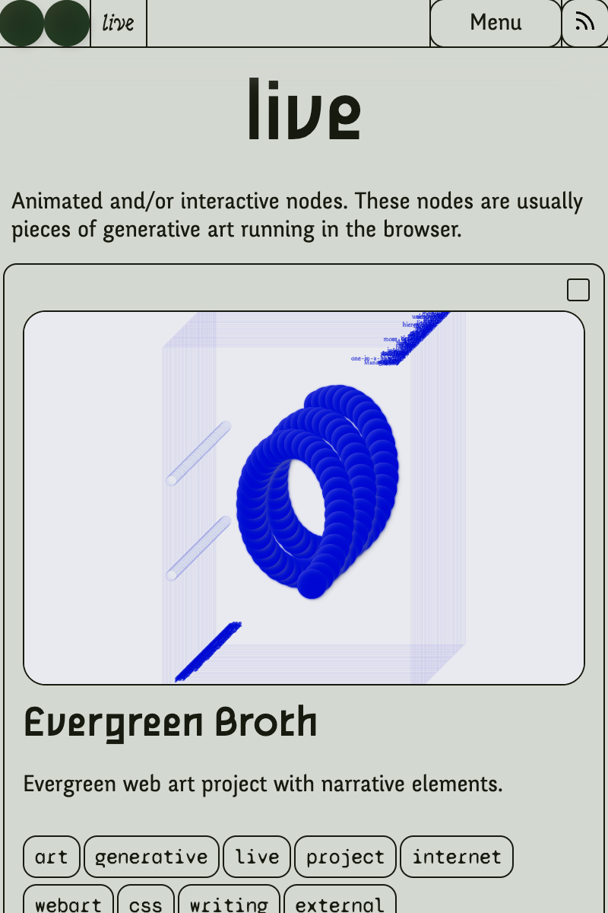 -
surfaces
web based domain warping editor
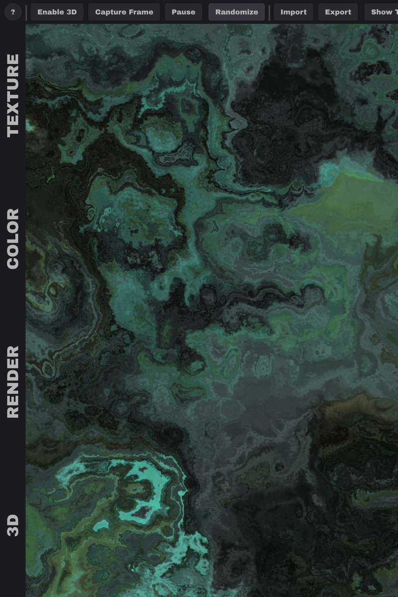